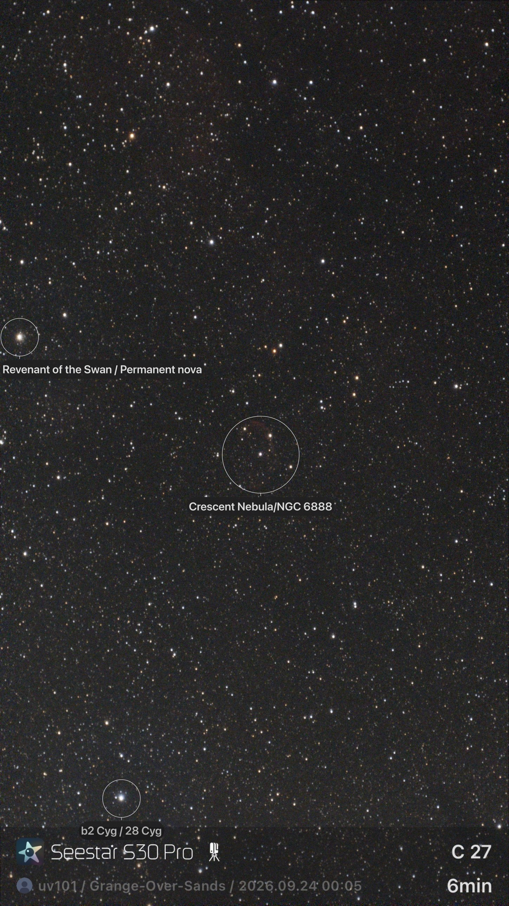

Night log · Wednesday 23 September 2026
Day one: straight out of the box in the Lake District
The plan
There wasn't one. The telescope was delivered to our campsite near Grange-over-Sands while we were away in the camper, so the first night was simply: open the box, charge it, stand it on the tripod and see what the phone app could do on its own. No wedge, no polar alignment and no Claude. This is the "before" picture for everything that follows.
- Location
- Grange-over-Sands, Cumbria
- Mount
- Tripod, alt-az
- Control
- Seestar app only
- Moon
- Waxing gibbous
The Moon
The obvious first target, and the app makes it easy: pick the Moon, wait for it to slew, and it's there. These are the app's own pictures, with its caption bar at the bottom.


Even from a 30 mm lens, the bright ray craters, the dark lava plains and the craters along the shadow line come out crisply. The Moon is so bright that one short exposure is enough, so none of the stacking described elsewhere on this site is needed.
A galaxy and a star cluster

The first deep-sky attempt shows two classic beginner lessons in one frame:
- Satellite trails. The straight streaks are satellites crossing the field during the exposures. Proper stacking with outlier rejection removes most of these.
- Field rotation. Look at the corners: the stars are drawn into short curved arcs. On a level tripod the scope tracks in altitude and azimuth, so the field slowly rotates around the centre during a long session. The centre stays sharp and the edges smear. This is why the scope later went onto an equatorial wedge.
The Crescent Nebula

Six minutes on the Crescent Nebula shows just a faint reddish arc inside the app's circle. That isn't a fault: emission nebulae like this need far more exposure time, ideally hours. That's what led to the question this site is about: what could the scope do if something could run it properly all night?
What day one taught us
- The app is genuinely good: finding targets, focusing and live stacking all worked first time.
- Bright targets such as the Moon look great immediately. Faint nebulae need hours, not minutes.
- Alt-az mode smears the edges of long sessions, so the wedge became the next purchase.